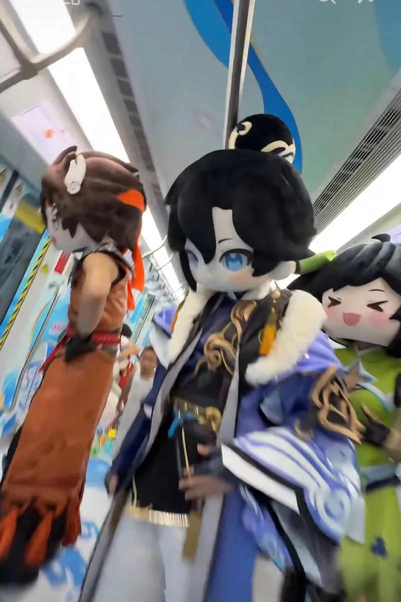
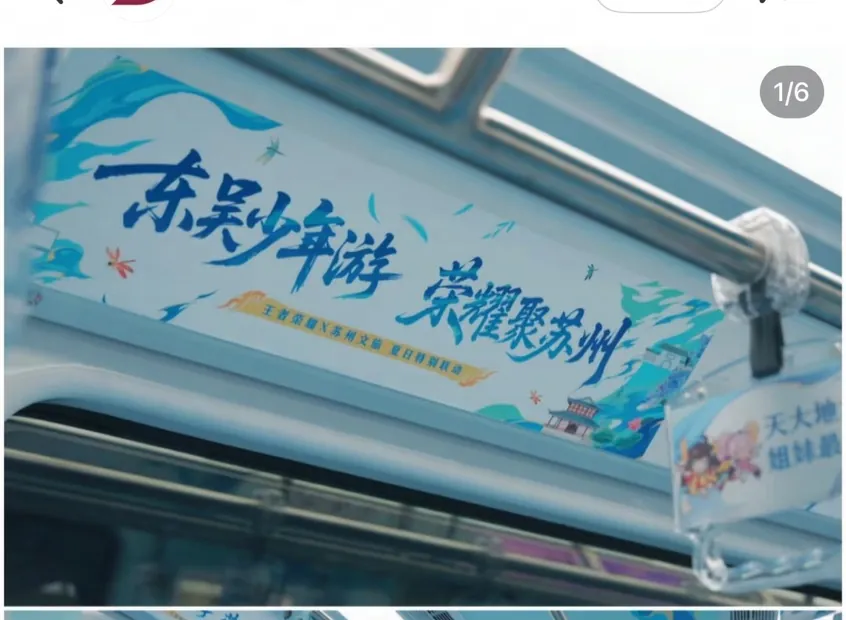
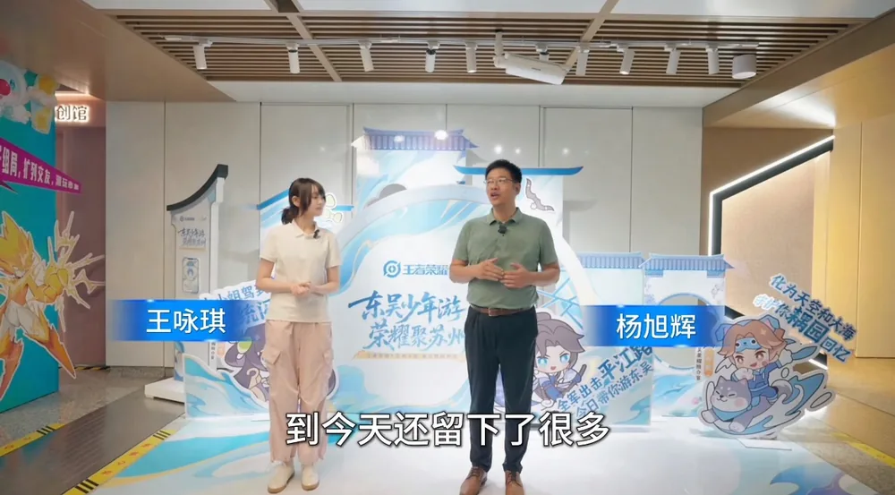
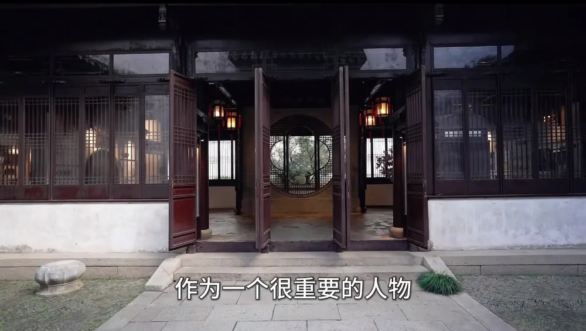
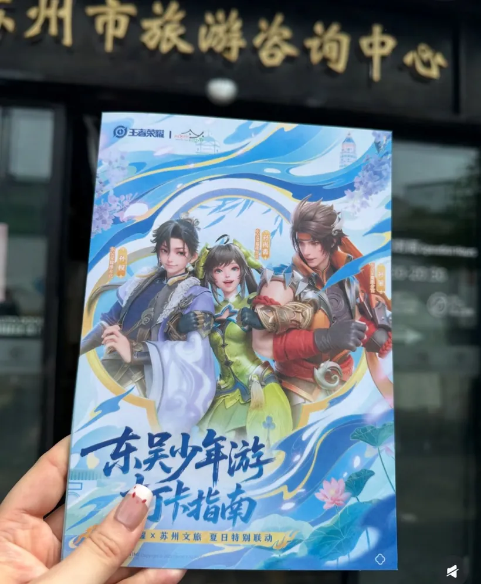

万国霸业：复盘
一个版本的内容，不是一条片子打全场。版本在推进，用户关注的点也在变： 首曝看信息，上线看福利，决赛看结果和现场。 按节点拆内容，比堆一条大而全的片子更有效。
跨界联动
东吴少年游：从冷启打爆到流量承接
在苏州文旅轨道交通部宣传组，参与王者荣耀 × 苏州地铁「东吴少年游」联动的内容策划与官号传播： 角色人偶进车厢做启动宣发，百家讲坛客座教授做文化科普，主题站与《东吴少年游打卡指南》承接线下， 最后用周边物料把一次 campaign 留在用户手里。
2 条自然流单条点赞 3w+
150w+项目总曝光
3 段冷启 → 文化 → 承接


PHASE 01 / COLD START
先让角色在地铁里“被偶遇”
冷启不先讲文化，先用 Coser/人偶制造“地铁里怎么有王者角色”的瞬间。人偶进车厢、主题列车与广济南路主题站同步上线，把一条联动消息变成可拍摄、可转发的城市事件。
- Coser/人偶进车厢，制造路人拍摄与偶遇感
- 主题列车 + 广济南路主题站同步露出
- 官号首发短视频，用角色台词降低广告感


PHASE 02 / CULTURE
再用文化内容，把热度拉长
热度起来后，用百家讲坛客座教授杨旭辉的对谈/科普，把“东吴少年游”讲成苏州故事：为什么是苏州、东吴历史与城市记忆有什么关系。横屏文化内容适合官号长线发布与二次剪辑。
- 教授对谈：给联动一个“为什么是苏州”的理由
- 横屏长视频 + 切片图文，持续供给官号
- 角色不只是皮肤，而是城市文化的入口


PHASE 03 / CONVERSION
最后用打卡和周边，把流量接住
把线上观众引到广济南路主题站与打卡点，发放《东吴少年游打卡指南》；用手册、联名周边和角色物料做收尾，让用户把一次 campaign 带走，也让官号获得二次 UGC。
- 主题站打卡 + 打卡手册领取
- 联名周边/角色物料承接，延长记忆
- 用户打卡反哺官号，形成二次传播